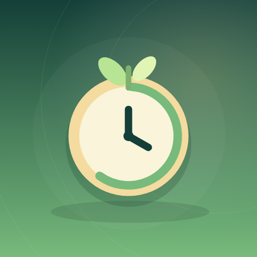

<- all projects

Focus Grove
Android
Volume
Live
A focus timer that grows a little garden as you study and work.
Focus Grove is a focus timer for studying, working and building a steady routine. Set work and break intervals for your Pomodoro sessions, finish a task and grow a plant in your own little garden. Create reusable focus and break routines, grow six kinds of trees through completed sessions and arrange plants across your garden in a setting you choose. Tag projects, compare 7-day, 30-day or all-time totals and filter your session history. You can pause and resume through interruptions, set a daily reminder and export your history or a backup.